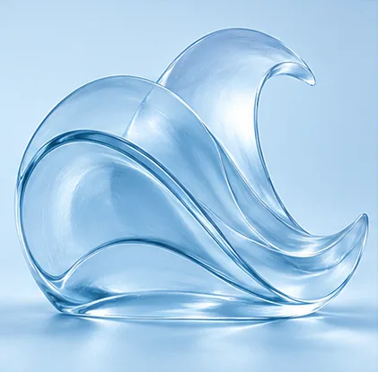

식사 선택
음식의 온도와 식사 시간을 바꾸었을 때 실제로 편안함이 달라지는지 관찰해 보세요.
감별 결과를 일상에서 이해하는 출발점 · 따뜻한 일상 리듬과 충분한 회복

식사 선택 ↓음식의 온도와 식사 시간을 바꾸었을 때 실제로 편안함이 달라지는지 관찰해 보세요.
가벼운 움직임부터 시작하고 피로가 쌓이는지 확인하며 운동을 이어가세요.
계획이 도움이 되는 부분과 유연성이 필요한 부분을 함께 찾아보세요.
신장 > 폐 > 간 > 심장 > 췌장
장기 크기, 검사 수치 또는 실제 기능부전을 뜻하지 않습니다.
권장 예
닭고기·쇠고기·생강
조절 예
돼지고기·보리
2020년 논문 표 2에 수록된 학설의 예시이며 음식별 효능이나 유해성이 입증된 결과는 아닙니다. 표의 판본과 항목은 다를 수 있습니다. Kim et al., 2020, Table 2
식품을 좋음/나쁨으로 단정하기보다 식사량·시간·조리법·실제 반응을 기록하세요. 체질별 식품표는 출처와 임상 적용을 확인 중입니다.
식사 기록, 불편 증상의 시점, 활동 후 회복, 복용 약과 알레르기를 의료진과 함께 확인하세요. 처방약을 임의로 중단하지 마세요.
동물의 먹이와 장에 관한 비교는 생활방식의 차이를 생각하는 비유일 뿐, 체질별 해부학이나 질병 인과관계의 증거가 아닙니다.
MBTI는 대화를 시작하는 비교 도구일 뿐입니다. 체질을 진단하거나 검증된 일대일 유형으로 대응시키지 않습니다. 성격이나 검사 결과만으로 식이 제한을 시작하지 마세요.
이 페이지는 별도 프로젝트 검토본입니다. 근거와 식품표 검증, 의료진 검토 및 공개 승인이 남아 있습니다.
원본 환자 참고자료는 별도 보존했습니다. 장부 배열과 섭생 주장은 원문 학설 및 연구 자료와 대조 중입니다. ECM Society · MBTI exploratory study